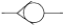

지게차운전기능사 (2005-04-03 기출문제)
1. 디젤기관의 구성품이 아닌 것은?
- 분사 펌프
- 공기 청정기
- 점화 플러그
- 흡기 다기관
(정답률: 60%)

2. 기관에서 엔진오일이 연소실로 올라오는 이유는?
- 피스톤링 마모
- 피스톤핀 마모
- 커넥팅로드 마모
- 크랭크축 마모
(정답률: 75%)
3. 일상 점검정비 작업 내용에 속하지 않는 것은?
- 엔진 오일량
- 에어클리너 점검
- 라디에이터 냉각수량
- 연료 분사노즐 압력
(정답률: 73%)
4. 압력식 라디에이터 캡에 대한 설명으로 적합한 것은?
- 냉각장치 내부압력이 규정보다 낮을 때 공기밸브는 열린다.
- 냉각장치 내부압력이 규정보다 높을 때 진공밸브는 열린다.
- 냉각장치 내부압력이 부압이 되면 진공밸브는 열린다.
- 냉각장치 내부압력이 부압이 되면 공기밸브는 열린다.
(정답률: 54%)
5. 건설기계의 운전 전에 점검할 사항이 아닌 것은?
- 냉각수
- 연료
- 윤활유
- 크랭크샤프트
(정답률: 85%)
6. 건설기계 운전 중 엔진 부조를 하다가 시동이 꺼졌다. 그 원인이 아닌 것은?
- 연료필터 막힘
- 연료에 물 혼입
- 분사노즐이 막힘
- 연료장치의 오버플로 호스가 파손
(정답률: 56%)
7. 기관을 시동하여 공전시에 점검할 사항이 아닌 것은?
- 기관의 팬벨트 장력을 점검
- 오일의 누출여부를 점검
- 냉각수의 누출여부를 점검
- 배기가스의 색깔을 점검
(정답률: 63%)
8. 디젤기관에서 노킹의 원인과 가장 거리가 먼 것은?
- 연료의 세탄가가 높다.
- 연료의 분사압력이 낮다.
- 연소실의 온도가 낮다.
- 착화지연 시간이 길다.
(정답률: 56%)
9. 동절기 냉각수가 빙결되어 기관이 동파되는 원인은?
- 냉각수의 체적이 늘어나기 때문에
- 엔진의 쇠붙이가 얼어서
- 냉각수가 빙결되면 발전이 안 되므로
- 열을 빼앗아 가므로
(정답률: 52%)
10. 윤활유 공급펌프에서 공급된 윤활유 전부가 엔진오일 필터를 거쳐 윤활부로 가는 방식은?
- 분류식
- 자력식
- 전류식
- 샨트식
(정답률: 47%)
11. 배기관이 불량하여 배압이 높을 때 기관에 생기는 현상 중 틀린 것은?
- 기관이 과열된다.
- 냉각수 온도가 내려간다.
- 기관의 출력이 감소된다.
- 피스톤의 운동을 방해한다.
(정답률: 64%)
12. 축전지 터미널의 식별법이 아닌 것은?
- 逡, 遵의 문자로 표시
- 터미널의 요철로 표시
- 굵고 가는 것으로 표시
- 적색과 흑색으로 표시
(정답률: 57%)
13. AC 발전기의 출력은 무엇을 변화시켜 조정하는가?
- 축전지 전압
- 발전기의 회전속도
- 로터 전류
- 스테이터 전류
(정답률: 33%)
14. 에어컨 장치에서 환경보존을 위한 대체물질로 신 냉매가스에 해당되는 것은?
- R-12
- R-22
- R-12a
- R-134a
(정답률: 46%)
15. 일반적으로 건설기계장비에 설치되는 좌·우 전조등 회로의 연결방법은?
- 병렬
- 직렬
- 직병렬
- 단식 배선
(정답률: 55%)
16. 축전지 충전 중에 화기를 가까이 하거나 충전상태를 점검하기 위하여 드라이버 등으로 스파크를 시키면 위험한 이유는?
- 축전지 케이스가 타기 때문이다.
- 전해액이 폭발하기 때문이다.
- 축전지 터미널이 손상되기 때문이다.
- 발생하는 가스가 폭발하기 때문이다.
(정답률: 52%)
17. 전동기의 종류와 특성 설명으로 틀린 것은?
- 직권전동기는 계자코일과 전기자 코일이 직렬로 연결된 것이다.
- 분권전동기는 계자코일과 전기자코일이 병렬로 연결된 것이다.
- 복권전동기는 직권전동기와 분권전동기 특성을 합한 것이다.
- 내연기관에서는 순간적으로 강한 토크가 요구되는 복권전동기가 사용된다.
(정답률: 58%)
18. 유압 브레이크에서 잔압을 유지시키는 것과 가장 관계가 깊은 것은?
- 피스톤
- 리턴 스프링
- 체크밸브
- 피스톤 컵
(정답률: 57%)
19. 굴삭기 작업시 안정성을 주고 장비의 밸런스를 잡아 주기 위하여 설치한 것은?
- 붐
- 스틱
- 버킷
- 카운터 웨이트
(정답률: 69%)
20. 굴삭기에서 트랙장력을 조정하는 기능을 가진 것은?
- 트랙 어저스터
- 스프로켓
- 주행모터
- 아이들러
(정답률: 45%)
21. 지게차를 경사면에서 운전할 때 짐의 방향은?
- 짐이 언덕 위쪽으로 가도록 한다.
- 짐이 언덕 아래쪽으로 가도록 한다.
- 운전에 편리하도록 짐의 방향을 정한다.
- 짐의 크기에 따라 방향이 정해진다.
(정답률: 79%)
22. 클러치가 끊어지지 않는 원인은?
- 클러치페달의 유격이 너무 크다.
- 클러치페달의 유격이 작다.
- 클러치디스크의 마모가 많다.
- 압력판의 마모가 많다.
(정답률: 41%)
23. 모터그레이더의 탠덤 드라이브 장치에 대한 설명 중 틀린 것은?
- 최종 감속 작용을 한다.
- 그레이더의 차체가 안정된다.
- 그레이더의 균형을 유지해 준다.
- 회전반경을 작게 하는 역할을 한다.
(정답률: 52%)
24. 슬립이음이나 유니버셜 조인트에 윤활주입으로 가장 좋은 것은?
- 유압유
- 기어오일
- 그리스
- 엔진오일
(정답률: 55%)
25. 지게차의 일상점검 사항이 아닌 것은?
- 토크 컨버터의 오일 점검
- 타이어 손상 및 공기압 점검
- 틸트 실린더 오일누유 상태
- 작동유의 양
(정답률: 48%)
26. 도저에 의한 완성 작업법에 대한 설명으로 부적당한 것은?
- 완성작업은 토공판이 빈 것 보다 흙을 가득히 채운 편이 쉽다.
- 토공판을 내리기 전에 먼저 트랙의 완성면과 평행한 면 위에 있는가를 확인한다.
- 거친 완성은 저속으로, 치밀한 완성일수록 고속으로 작업한다.
- 도저는 거친 마무리작업에 적합한 기계이다.
(정답률: 68%)
27. 건설기계의 구조변경검사는 누구에게 신청하여야 하는가?
- 건설기계정비업소
- 자동차검사소
- 검사대행자(건설기계검사소)
- 건설기계폐기업소
(정답률: 69%)
28. 시·도지사로부터 등록번호표 제작통지를 받은 건설기계 소유자는 며칠이내에 등록번호표 제작자에게 제작 신청을 하여야 하는가?
- 3일
- 10일
- 20일
- 30일
(정답률: 26%)
29. 일반도로에서 버스 전용차로를 통행할 수 없는 차는?
- 긴급자동차
- 7인승 이상 모든 승합자동차
- 운송사업용 승합자동차
- 노선을 지정하여 운행하는 통학, 통근용 승합차
(정답률: 47%)
30. 주행 중 진로를 변경하고자 할 때 운전자가 지켜야할 사항으로 틀린 것은?
- 후사경 등으로 주위의 교통상황을 확인한다.
- 신호를 실시하여 뒤차에게 알린다.
- 진로를 변경할 때에는 뒤차에 주의할 필요가 없다.
- 뒤차와 충돌을 피할 수 있는 거리를 확보할 수 없을 때는 진로를 변경하지 않는다.
(정답률: 85%)
31. 도로를 통행하는 자동차가 야간에 켜야 하는 등화의 구분중 견인되는 자동차가 켜야 할 등화는?
- 전조등, 차폭등, 미등
- 차폭등, 미등, 번호등
- 전조등, 미등, 번호등
- 전조등, 미등
(정답률: 48%)
32. 교통사고 처리특례법상 10개 항목에 해당되지 않는 것은?
- 중앙선 침범
- 무면허 운전
- 신호위반
- 통행 우선순위 위반
(정답률: 72%)
33. 건설기계정비업의 업종구분에 해당하지 않은 것은?
- 종합정비업
- 부분정비업
- 전문정비업
- 특수정비업
(정답률: 48%)
34. 도로교통 법규에 위반이 되는 것은?
- 밤에 교통이 빈번한 도로에서 전조등을 계속 하향했다.
- 낮에 어두운 굴속을 통과할 때 전조등을 켰다.
- 소방용 방화물통으로부터 6미터 지점에 주차하였다.
- 노면이 얼어붙은 곳에서 최고 속도의 20/100을 줄인 속도로 운행하였다.
(정답률: 55%)
35. 유압장치가 작동 중 과열이 발생할 때의 원인으로 가장 적절한 것은?
- 오일의 양이 부족하다.
- 오일 펌프의 속도가 빠르다.
- 오일 압력이 낮다.
- 오일의 증기압이 낮다.
(정답률: 48%)
36. 유압장치에 부착되어 있는 오일탱크의 부속장치가 아닌 것은?
- 주입구 캡
- 유면계
- 배플
- 피스톤 로드
(정답률: 62%)
37. 유압장치의 장점이 아닌 것은?
- 작은 동력원으로 큰 힘을 낼 수 있다.
- 과부하 방지가 용이하다.
- 운동방향을 쉽게 변경할 수 있다.
- 고장원인의 발견이 쉽고 구조가 간단하다.
(정답률: 61%)
38. 유압 펌프가 작동 중 소음이 발생할 때의 원인으로 틀린 것은?
- 릴리프 밸브(relief valve)에서 오일이 누유하고 있다.
- 스트레이너(strainer) 용량이 너무 작다.
- 흡입관 접합부로부터 공기가 유입된다.
- 엔진과 펌프축 간의 편심 오차가 크다.
(정답률: 37%)
39. 일반적으로 유압장치에서 릴리프밸브가 설치되는 위치는?
- 펌프와 오일탱크 사이
- 여과기와 오일탱크 사이
- 펌프와 제어밸브 사이
- 실린더와 여과기 사이
(정답률: 53%)
40. 유압오일의 온도가 상승할 때 나타날 수 있는 결과가 아닌 것은?
- 점도 저하
- 펌프 효율 저하
- 오일 누설의 저하
- 밸브류의 기능 저하
(정답률: 58%)
41. 플러싱 후의 처리방법으로 틀린 것은?
- 잔류 플러싱 오일을 반드시 제거하여야 한다.
- 작동유 보충은 24시간 경과 후 하는 것이 좋다.
- 작동유 탱크 내부를 다시 청소한다.
- 라인필터 엘리먼트를 교환한다.
(정답률: 50%)
42. 유압펌프의 기능을 설명한 것 중 맞는 것은?
- 유압에너지를 동력으로 전환한다.
- 원동기의 기계적 에너지를 유압에너지로 전환한다.
- 어큐뮬레이터와 동일한 기능이다.
- 유압회로내의 압력을 측정하는 기구이다.
(정답률: 47%)
43. 건설기계에 사용되는 유압 실린더의 구성 부품이 아닌 것은?
- 어큐뮬레이터(축압기)
- 로드
- 피스톤
- 실(seal)
(정답률: 45%)
44. 유압회로 내 압력이 비정상적으로 올라가는 원인에 해당되는 것은?
- 오일 파이프 파손
- 오일의 점도가 묽음
- 오일 압력게이지 고장
- 유압조정밸브 고착
(정답률: 43%)
45. 오일의 흐름이 한 쪽 방향으로만 가능한 것은?
- 릴리프 밸브(relief valve)
- 파이롯 밸브(pilot valve)
- 첵 밸브(check valve)
- 오리피스 밸브(orifice valve)
(정답률: 61%)
46. 그림에서 첵밸브를 나타낸 것은?


(정답률: 77%)
47. 야간작업을 할 경우 안전운전 방법으로 틀린 것은?
- 작업장에는 조명이 불필요하고 통로만 조명시설을 한다.
- 전조등 또는 기타 조명장치를 이용한다.
- 원근감이 불명확해지므로 조명장치를 이용한다.
- 지면의 고저감의 착각을 일으키기 쉬우므로 안전속도로 운전한다.
(정답률: 85%)
48. 기계장치의 재해를 방지하기 위해 선풍기 날개에 의한 위험방지조치로서 가장 적합한 것은?
- 망 또는 울 설치
- 이탈방지장치 부착
- 과부하방지장치 부착
- 반발방지장치 설치
(정답률: 68%)
49. 이동식 기계의 운전자는 안전을 고려하여 작업을 하여야 한다. 다음 중 안전에 잘못된 것은?
- 항상 주변의 작업자나 장애물에 주의하여 안전여부를 확인한다.
- 이동 중에는 항상 최고속도를 일정하게 유지한다.
- 급선회는 피한다.
- 물체를 높이 올린채 주행이나 선회하는 것을 피한다.
(정답률: 85%)
50. 기계장치의 안전관리를 위해 정지 상태에서 점검하는 사항이 아닌 것은?
- 볼트·너트의 헐거움
- 스위치 및 외관상태
- 힘이걸린 부분의 흠집
- 이상 음 및 진동상태
(정답률: 63%)
51. 인화성이 가장 큰 물질은?
- 산소
- 질소
- 황산
- 알콜
(정답률: 54%)
52. 작업에 필요한 수공구의 보관에 알맞지 않는 것은?
- 공구함을 준비하여 종류와 크기별로 보관한다.
- 사용한 수공구는 방치하지 말고 소정의 장소에 보관 한다.
- 날이 있거나 뾰족한 물건은 위험하므로 뚜껑을 씌워 둔다.
- 회전숫돌은 오래 사용하기 위하여 수분이나 습기가 있는 곳에 보관한다.
(정답률: 87%)
53. 다음에서 안전하게 공구를 취급하는 방법 중 틀린 것은?
- 공구를 사용한 후 제자리에 정리하여 둔다.
- 예리한 공구 등을 주머니에 넣고 작업을 하여서는 안 된다.
- 사용전에 손잡이에 묻은 기름 등은 닦아내어야 한다.
- 작업중 공구를 타인에게 숙달된 자가 던져 전달하면 작업능률이 좋다.
(정답률: 87%)
54. 유류화재시 소화를 위한 방법으로 가장 거리가 먼 것은?
- 방화커튼을 이용하여 화재진압
- 모래를 사용하여 화재진압
- CO2소화기를 이용하여 화재진압
- 물을 이용하여 화재진압
(정답률: 73%)
55. 안전적 측면에서 인화점이 낮은 연료는?
- 화재발생 위험이 있다.
- 연소상태의 불량 원인이 된다.
- 압력 저하 요인이 발생한다.
- 화재발생 부분에서 안전하다.
(정답률: 51%)
56. 산업안전 녹색표지부착위치로서 잘못된 것은?
- 안전모의 좌·우면
- 안전완장
- 작업복의 우측어깨
- 작업복의 오른쪽가슴위치
(정답률: 43%)
57. 일반 도시가스 사업자의 지하배관 설치시 공동주택 등의 부지 내에서는 몇 m이상의 깊이에 배관을 설치해야 하는가?
- 0.6m 이상
- 1.0m 이상
- 1.2m 이상
- 1.5m 이상
(정답률: 38%)
58. 건설기계가 고압전선에 근접 또는 접촉으로 가장 많이 발생될 수 있는 사고유형은?
- 감전
- 화재
- 화상
- 휴전
(정답률: 82%)
59. 지상에 설치되어있는 가스배관 외면에 반드시 표시해야 하는 사항이 아닌 것은?
- 사용가스명
- 가스흐름방향
- 소유자명
- 최고사용압력
(정답률: 72%)
60. 파일항타기를 이용한 파일작업 중 지하에 매설된 전력케이블 외피가 손상되었다. 다음 중 맞는 것은?
- 케이블 내에 있는 동선에 손상이 없으면 전력공급에 지장이 없다.
- 케이블 외피를 마른헝겊으로 감아 놓았다.
- 인근 한국전력사업소에 통보하고 손상부위를 절연테이프로 감은 후 흙으로 덮었다.
- 인근 한국전력사업소에 연락하여 한전직원이 조치토록 하였다.
(정답률: 79%)